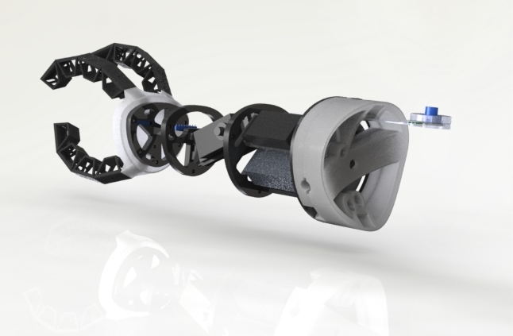

INTUITIVE CONTROL & FEEDBACK UNDER-ELBOW PROSTHESIS
We believed that prosthetics ought to adapt to the human, not vice versa. I spearheaded mechanical development of the arm, building eight prototypes during the project's eight-week timeline. The result was a $170, 0.9lb under-elbow prosthesis that married affordability with an intuitive interface for control and feedback.
